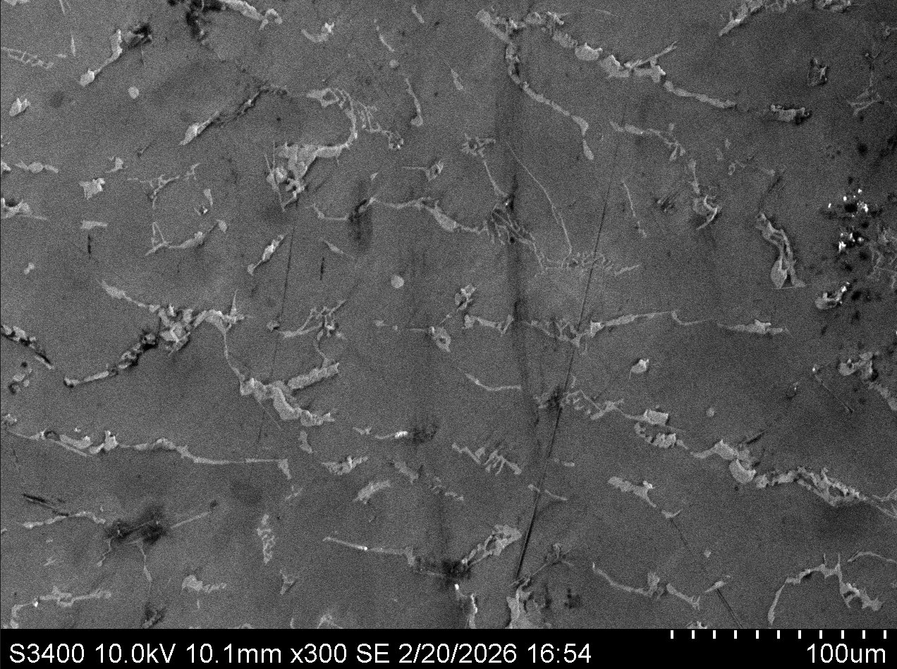

Combinatorial alloy design by directed energy deposition
Problem
Choosing an alloy for a turbine component means trading strength, thermal conductivity, and creep resistance against each other, and against cost. Testing that trade-off one cast ingot at a time is slow. Multi-material directed energy deposition offers a shortcut: because powder feedstock is blended at the nozzle during deposition, composition can be varied continuously within a single build, producing many compositions from one run.
Approach
I designed a test plan to fabricate 30 alloy couples by multi-material DED for turbine alloy down-selection, then analyzed the resulting builds for strength, thermal conductivity, and creep resistance to identify the best-performing composition at acceptable cost.
Deposited material is characterized by scanning electron microscopy to relate measured properties back to microstructure — specifically the distribution and morphology of second-phase features along and between deposition tracks, which differ substantially from what the same alloy would show if cast.


My role
I designed the test plan and carried out the property analysis and down-selection, and performed SEM characterization of the deposited material.